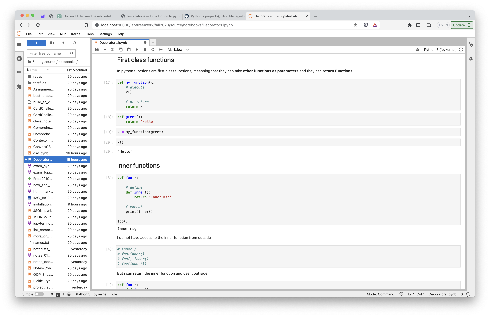
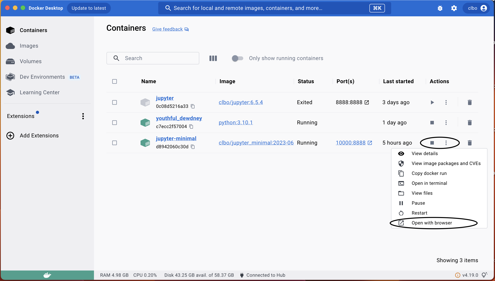

marp: true
Installations
This document will describe what you should install in order to follow this elective.
The IDE we will use in this elective is called Jupyter Notebook. Its a browser based IDE and i our case we will install it by creating a Docker image and container from a Dockerfile.

Since Jupyter Notebook is a browser based IDE you will also be able to find it on all the big cloud providors pages, and you are also welcome to do that in a few weeks.
1. Docker Desktop
Download and install Docker Desktop
In order to have a Docker container running on your computer you will need to have Docker desktop installed (unless you are using a Linux OS).
Navigate to the Docker website and download and install Docker Desktop for your operating system.
Windows
On Windows you might get some errors concerning WSL2. But error message will decribe what to do. Follow that description, or ask in class.
Windows Home 10 users
On Windows Home 10 you could run into some trouble while installing Docker.
Follow these steps to solve these problems.
Install Docker Desktop on Windows Home
Check if everything is installed
In your terminal or powershell you should type docker --version and get the following result.
$ docker --version
Docker version 20.10.17, build 100c701
If you do not see this, get an error or like, then you still do not have docker installed on your system.
2. Build an image and run the Container
First clone this repository and cd into it:
git clone https://github.com/python-elective-kea/fall2023-code-examples-from-teachings.git
You can rename the folder if you want, or just leave it as it is.
mv fall2023-code-examples-from-teachings python
After this CD into the folder
cd fall2023-code-examples-from-teachings
Run the following docker command
docker build --tag jupyter_minimal:2023-06-12 .
This will create the image.
Run this command:
docker run -it -name jupyter-minimal -p 8888:8888 -v "${PWD}":/home/jovyan/work jupyter_minimal:2023-06-12
This will crerate and start a container.
A the buttom in your terminal you will see this:
To access the server, open this file in a browser:
file:///home/jovyan/.local/share/jupyter/runtime/jpserver-7-open.html
Or copy and paste one of these URLs:
http://d8942060c30d:8888/lab?token=c2ebc25800d7031c675fb592ea38ed1020725ce75d8d7e1c
http://127.0.0.1:8888/lab?token=c2ebc25800d7031c675fb592ea38ed1020725ce75d8d7e1c
You should copy the token which in the case above is this:
c2ebc25800d7031c675fb592ea38ed1020725ce75d8d7e1c
Open your browser and type in this url:
http://127.0.0.1:8888
A little down on this page you will find two input fields a token and a password field.
Paste in your token in the token field and create a password (an easy password is sufficient).
Thats it, you can now close your browser and stop the terminal from serving the notebook. (ctrl+c)
Start and stopping the Jupyter Notebook
Find the Docker Desktop application (GUI) and open it.
Here you can start and stop the container and open it in the browser.

Reinstall and files
If you need to or wish you can at any time delete the container and do the run command again to start a fresh copy of the container.
docker run -it -name jupyter-minimal -p 8888:8888 -v "${PWD}":/home/jovyan/work jupyter_minimal:2023-06-12
Your files will be in the repository you cloned
fall2023-code-examples-from-teachings
And they will not be deleted when you delete the container. You will also be able to access these files in other editors if you wish.